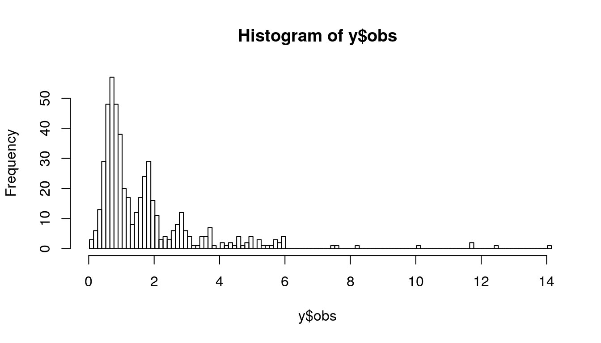

convreg-first-analysis.RmdLet’s first simulate some data.
set.seed(123) e=0.75+rnorm(n=500,mean=0,sd=0.25) x1 = rnorm(500,0,0.5) x2 = runif(500,-2,1) k= rnbinom(500,mu=exp(x2),size=1.5) y= data.frame(obs=(k + e) , f1 = x1, f2 = x2)
We can plot the observations’ histogram:

and an overview of the raw data:
| obs | f1 | f2 |
|---|---|---|
| 1.6098811 | -0.3009464 | -1.5209781 |
| 0.6924556 | -0.4968493 | -1.5664524 |
| 1.1396771 | 0.5133925 | -1.5524588 |
| 0.7676271 | 0.3755307 | -0.4566972 |
| 0.7823219 | -0.7545833 | -0.5215181 |
Let’s run the convReg package with the true predictors.
res.reg.em =convreg( ~obs, formula.mu1 =~ f2, formula.mu2 =~ f1, data=y, dist1 = "Nbinom",method = "mle")
Which yields the following estimates:
## --------------------------------------------
## Convolution Regression Results
## MLE, Nbinom/Gauss
## Return code 0:
## Log-Likelihood: -589.3449
## 6 free parameters
##
## Estimates: Nbinom
## Estimate Std.Error Low Upp t.value p.value
## mu 1: (Intercept) 0.0939356 0.0487042 -0.0015247 0.1893958 1.9286951 0.0543
## mu 1: f2 1.0793325 0.0663368 0.9493124 1.2093525 16.2704991 0.0000
## sigma 1: (Intercept) 11.5892481 NA NA NA NA NA
##
## Estimates: Gauss
## Estimate Std.Error Low Upp t.value p.value
## mu 2: (Intercept) 0.7400362 0.0133833 0.7138049 0.7662674 55.2955657 0.0000
## mu 2: f1 -0.0472354 0.0269647 -0.1000863 0.0056155 -1.7517466 0.0804
## sigma 2: (Intercept) -1.4131854 0.0354138 -1.4825965 -1.3437743 -39.9049010 0.0000
## --------------------------------------------